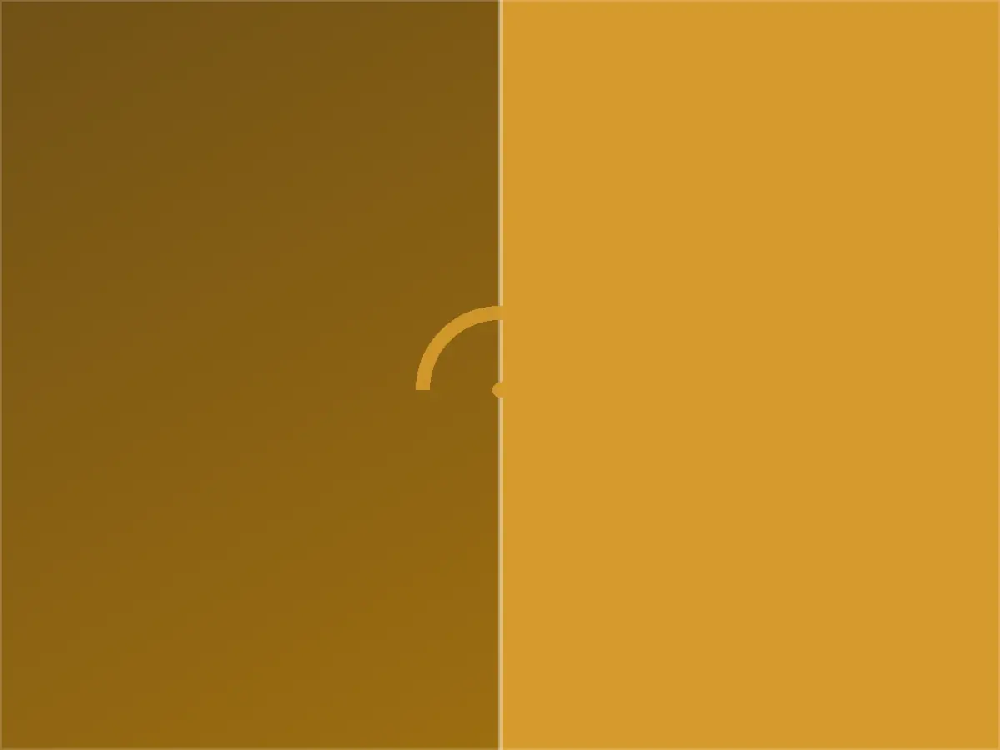
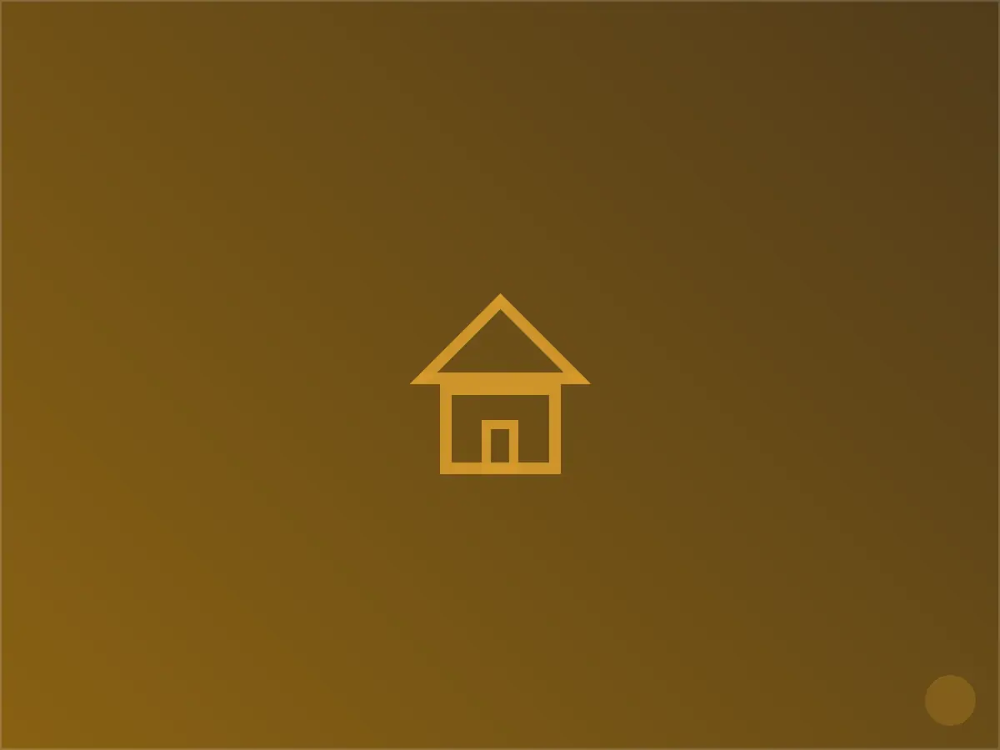

كهربائي في حي النسيم، الرياض
في كثير من بيوت حي النسيم يبدأ الأمر بمشهد مألوف لكل من سكن الحي منذ إنشائه: مفتاح إنارة يهتز عند اللمس، أو صوت طقطقة خفيف من لوحة التوزيع خلف باب المطبخ. النسيم من الأحياء التي اكتمل بناء معظم فللها قبل أكثر من عشرين عاماً، وهذا التاريخ بالذات هو ما يجعل التعامل مع كهرباء المنزل هنا مختلفاً عن أي حي حديث في الرياض.
فريق القيصر يعمل في هذا الحي بشكل شبه أسبوعي، وتعلّمنا أن أغلب البلاغات لا تكون عطلاً عابراً بقدر ما هي نتيجة تراكمية: تمديد أصلي صُمم لأحمال أقل، ثم أُضيفت إليه مكيفات ودوائر إنارة على مدى سنوات دون إعادة حساب السعة. نتعامل مع هذا كأولوية سلامة قبل أن تكون مسألة راحة.
خدماتنا الكهربائية في النسيم
نقدّم في حي النسيم كامل الأعمال الكهربائية المنزلية: نُصلح الأعطال الطارئة، نُنفّذ الصيانة الدورية للوحات التوزيع، ونُنجز التمديدات الجديدة والتوسعات بما يشمل تمديد الأسلاك، تركيب المفاتيح والمقابس، وتأهيل نقاط التأريض. نغطي أيضاً تركيب الإنارة الداخلية والخارجية وربط الدوائر بأجهزة التكييف والمطابخ الكهربائية.

خصوصية حي النسيم — ما نلاحظه في هذا الحي تحديداً
أنواع المباني الشائعة:
- فلل مستقلة من جيل الثمانينات والتسعينات الهجرية، بأسلاك ألمنيوم أو نحاسية قديمة في كثير من الأحيان
- عمارات سكنية صغيرة (٤-٨ شقق) بلوحة توزيع مشتركة قديمة
- ملاحق وأدوار علوية أُضيفت لاحقاً بتمديد غير مطابق لبقية المنزل

لماذا يختارنا سكان النسيم
استجابة سريعة
نصل عادة خلال ٤٥-٦٠ دقيقة من البلاغ، ولدينا فريق مخصص لتغطية النسيم والأحياء المحيطة به.
خبرة بطراز الحي
نحمل معنا في كل سيارة خدمة قطع غيار مخصصة للتمديدات القديمة (قواطع وقواعد توافق الأنظمة القديمة)، لأننا نعرف أن هذا النوع من الأعطال هو الغالب في النسيم تحديداً.
ضمان مكتوب
كل عمل تمديد أو إصلاح يصدر له ضمان مكتوب يغطي القطع والتنفيذ لمدة تصل إلى سنتين.
خطوات العمل
التواصل
اتصال أو رسالة واتساب، نطلب وصفاً مختصراً للعطل لتجهيز الفني والأدوات المناسبة قبل التحرك.
المعاينة
فحص ميداني دقيق للوحة والدائرة المتأثرة، وتوضيح السبب والتكلفة قبل البدء بأي تنفيذ.
التنفيذ
إصلاح أو تمديد وفق ما تم الاتفاق عليه، مع اختبار الدائرة بعد الانتهاء وتسليم ضمان مكتوب.
أسئلة شائعة من سكان النسيم
هل يستحق تجديد كامل الأسلاك في فيلا قديمة بالنسيم التكلفة؟
في أغلب الفلل التي عمرها أكثر من ١٥ عاماً، نعم — خصوصاً إذا كانت هناك بلاغات متكررة لفصل الكهرباء أو سخونة في المفاتيح. نجري فحصاً مجانياً أولاً لنحدد هل المطلوب تجديد جزئي للدوائر الأكثر حملاً أو تجديد شامل.
كم يستغرق إصلاح عطل لوحة التوزيع؟
الأعطال البسيطة (قاطع تالف، وصلة محروقة) تُحل خلال ساعة إلى ساعتين من وصول الفني. أما إعادة تمديد لوحة كاملة فتحتاج عادة يوماً إلى يومين حسب حجم الفيلا.
هل تصلون بنفس اليوم إذا كان العطل طارئاً؟
نعم، الاتصالات من داخل النسيم والأحياء المجاورة لها أولوية استجابة سريعة، وغالباً نصل خلال ٤٥-٦٠ دقيقة لحالات انقطاع التيار الكامل.